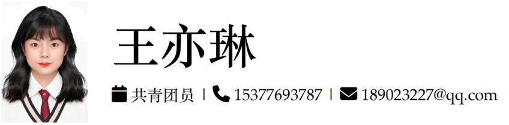

洞察与定义Discover & define
从市场、用户、场景、技术和竞品出发，识别真实问题、机会空间与差异化价值。
Frame real problems and differentiated opportunities through market, user, scenario, technology, and competitor research.
AI Product · Research · Design
我从环境设计走向 AI 产品与战略研究，用用户洞察、数据分析和跨团队协作，把复杂场景转化为可验证、可交付的产品方案。
I moved from environmental design into AI product and strategy, combining user insight, data analysis, and cross-functional delivery to turn complex contexts into testable products.


即将入读香港大学管理科学与工程硕士
Incoming MSc student in Management Science & Engineering, HKU
01
我关注生成式 AI、智能终端、AI 影像与教育科技，也相信好的产品判断必须同时回应用户价值、技术可行性与商业目标。
I focus on generative AI, intelligent devices, AI imaging, and education technology. I believe good product judgment must balance user value, technical feasibility, and business goals.
在 TCL、科大讯飞、招商银行与设计院的实践中，我完成过产品机会研究、PRD 与原型设计、需求池管理、竞品分析、数据复盘及跨团队项目推进。环境设计训练也让我习惯从真实的人、空间与行为出发定义问题。
Across TCL, iFLYTEK, China Merchants Bank, and a design institute, I have worked on opportunity research, PRDs and prototypes, requirement management, competitive analysis, data reviews, and cross-functional execution. My design background keeps my product thinking grounded in real people, spaces, and behaviors.
02
从市场、用户、场景、技术和竞品出发，识别真实问题、机会空间与差异化价值。
Frame real problems and differentiated opportunities through market, user, scenario, technology, and competitor research.
把业务诉求转化为 PRD、流程、原型与验收标准，并通过数据和体验走查验证方案。
Translate business needs into PRDs, flows, prototypes, and acceptance criteria, then validate with data and experience reviews.
协调算法、研发、测试、设计与业务团队，管理依赖、优先级和风险，推动需求闭环。
Align algorithm, engineering, QA, design, and business teams while managing dependencies, priorities, and delivery risk.
03
TCL 软件工程中心 · 产品规划部
围绕电视、手机与家庭多终端生态开展生成式 AI 与影像产品洞察；作为电视端 AI 快剪专题 Owner，协调预研、算法、客户端、嵌入式、设计与业务团队，推进方案评审、优先级判断与体验验证。
Researched generative-AI and imaging opportunities across TV, mobile, and home-device ecosystems. Owned an AI quick-edit initiative for TV, coordinating research, algorithms, clients, embedded software, design, and business teams through prioritization and experience validation.
科大讯飞 · iFLYTEK
面向批阅机、数智作业和智学网承接教师、学生、运营与客服需求，负责需求分析、PRD、原型、业务规则和验收标准；维护需求池与版本清单，并结合使用数据和反馈定位核心链路问题。
Owned multi-role requirements for AI education products, producing PRDs, prototypes, rules, and acceptance criteria. Managed the requirement pool and release flow, using product data and feedback to identify friction in core journeys.
招商银行武汉分行
梳理活动上线流程与检查项，监控经营表现、客户标签和重点客户异动，协同销售推进潜力客户转化。
Streamlined campaign operations, monitored business performance and customer segments, and supported conversion of high-potential accounts.
湖北省城建设计院
参与智慧路灯产品设计与项目推进，使用 Figma / Axure 完成原型与交互表达；运营多平台内容矩阵，累计产出原创内容 110 篇。
Supported a smart-streetlight product with Figma/Axure prototypes and cross-party coordination, while producing 110 original posts across social channels.
武汉市拜斯达装饰公司
搭建全渠道用户反馈闭环，归类咨询、投诉与转化阻塞问题，推动服务流程和响应机制优化。
Built a cross-channel feedback loop, categorized service and conversion issues, and helped improve response workflows.
04
通过地铁、公交和社区边界等空间数据，对比深圳城中村与正式居住区的公共交通可达性和设施分布公平性。
A spatial analysis comparing public-transit accessibility and distributional equity between Shenzhen's urban villages and formal residential areas.
围绕运输效率、路径优化和库存管理，研究物联网、机器学习与实时数据分析在智慧物流中的协同应用。
A study of how IoT, machine learning, and real-time analytics can improve transport efficiency, route planning, and inventory management.
05
06
管理科学与工程 · 硕士MSc in Management Science & Engineering
环境设计 · 本科 · GPA 89.08/100 · 前 10%BEnvD in Environmental Design · GPA 89.08/100 · Top 10%
07
Product discovery · User research · Competitive analysis · PRD · Roadmap · Metrics · Acceptance criteria
Prompt design · Agent workflow · API · FastAPI · Swagger · HTML / CSS / JavaScript · GitHub Pages · Railway
Excel · SQL / MySQL · Python · Data cleaning · Metric design · Business review
Figma · Axure · Canva · Visio · MindManager · Photoshop · Premiere · After Effects
08